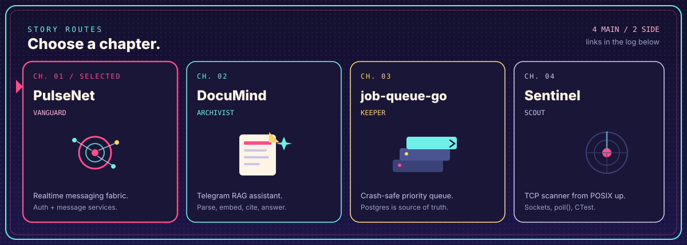
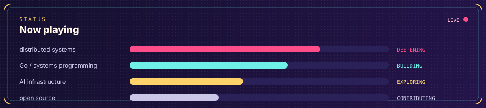
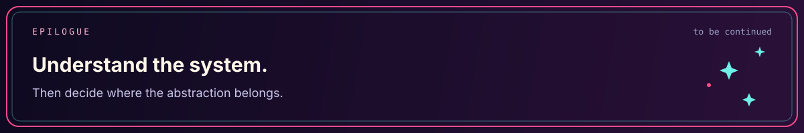

systems first, applications second / github.com/Popie52

| Ch | Route | What it is |
|---|---|---|
| 01 | PulseNet | Realtime messaging fabric (auth + message services) |
| 02 | DocuMind | Telegram RAG assistant: parse, embed, cite |
| 03 | job-queue-go | Crash-safe priority queue; Postgres is source of truth |
| 04 | Sentinel | TCP scanner built from POSIX sockets upward |
| S1 | genie-cli | Local Gemini CLI that reads and runs project files |
| S2 | ai-agent-pipeline | Five-agent Gemini pipeline with a trace UI |

